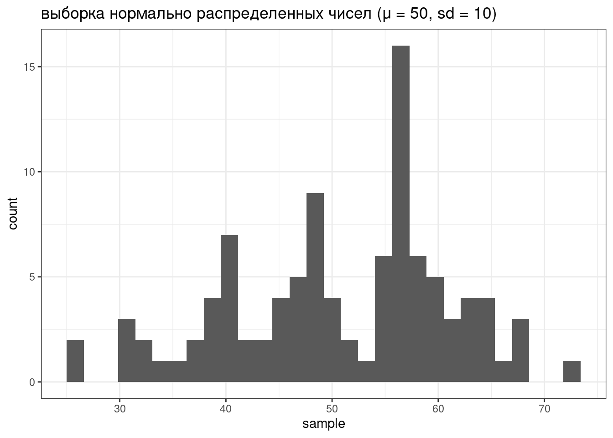
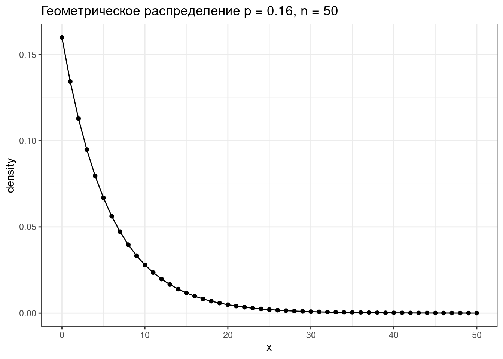
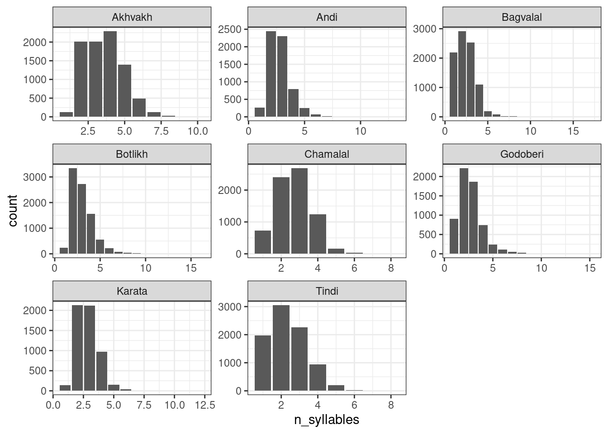
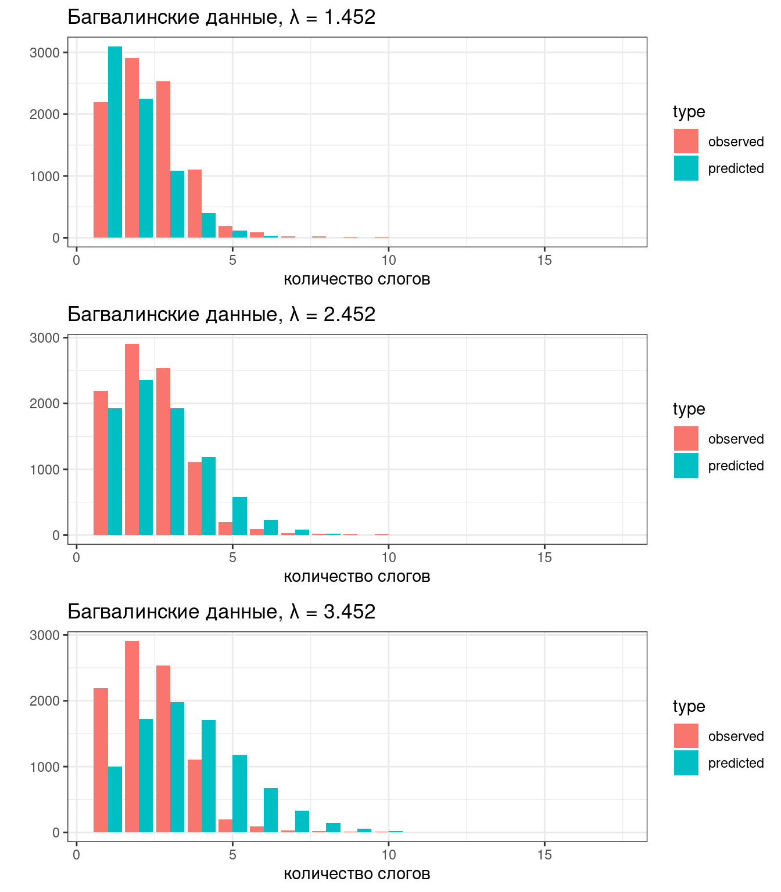
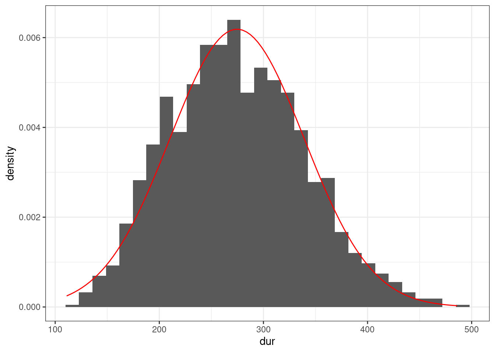

2 Распределения
library(tidyverse)2.1 Распределения в R
В R встроено какое-то количество известных распределений. Все они представлены четырьмя функциями:
d...(функция плотности, probability density function),p...(функция распределения, cumulative distribution function) — интеграл площади под кривой от начала до указанной квантилиq...(обратная функции распределения, inverse cumulative distribution function) — значение p-той квантили распределения- и
r...(рандомные числа из заданного распределения).
Рассмотрим все это на примере нормального распределения.
tibble(x = 1:100,
PDF = dnorm(x = x, mean = 50, sd = 10)) %>%
ggplot(aes(x, PDF))+
geom_point()+
geom_line()+
labs(title = "PDF нормального распределения (μ = 50, sd = 10)")tibble(x = 1:100,
CDF = pnorm(x, mean = 50, sd = 10)) %>%
ggplot(aes(x, CDF))+
geom_point()+
geom_line()+
labs(title = "CDF нормального распределения (μ = 50, sd = 10)")tibble(quantiles = seq(0, 1, by = 0.01),
value = qnorm(quantiles, mean = 50, sd = 10)) %>%
ggplot(aes(quantiles, value))+
geom_point()+
geom_line()+
labs(title = "inverse CDF нормального распределения (μ = 50, sd = 10)")tibble(sample = rnorm(100, mean = 50, sd = 10)) %>%
ggplot(aes(sample))+
geom_histogram()+
labs(title = "выборка нормально распределенных чисел (μ = 50, sd = 10)")
Если не использовать set.seed(), то результат работы рандомизатора нельзя будет повторить.
Какое значение имеет 25% квантиль нормального распределения со средним в 20 и стандартным отклонением 90? Ответ округлите до трех знаков после запятой.
Данные из базы данных фонетических инвентарей PHOIBLE (Moran, McCloy, and Wright 2014), достаточно сильно упрощая, можно описать нормальным распределением со средним 35 фонем и стандартным отклонением 13. Если мы ничего не знаем про язык, оцените с какой вероятностью, согласно этой модели произвольно взятый язык окажется в промежутке между 25 и 50 фонемами? Ответ округлите до трех знаков после запятой.
Какие есть недостатки у модели из предыдущего задания?
ответы:
2.2 Дискретные переменные
2.2.1 Биномиальное распределение
Биномиальное распределение — распределение количетсва успехов эксперементов Бернулли из n попыток с вероятностью успеха p.
\[P(k | n, p) = \frac{n!}{k!(n-k)!} \times p^k \times (1-p)^{n-k} = {n \choose k} \times p^k \times (1-p)^{n-k}\] \[ 0 \leq p \leq 1; n, k > 0\]
tibble(x = 0:50,
density = dbinom(x = x, size = 50, prob = 0.16)) %>%
ggplot(aes(x, density))+
geom_point()+
geom_line()+
labs(title = "Биномиальное распределение p = 0.16, n = 50")
Немного упрощая данные из статьи (Rosenbach 2003: 394), можно сказать что носители британского английского предпочитают s-генитив (90%) of-генитиву (10%). Какова вероятность, согласно этим данным, что в интервью британского актера из 118 контекстов будет 102 s-генитивов? Ответ округлите до трёх ИЛИ МЕНЕЕ знаков после запятой.
А какое значение количества s-генитивов наиболее ожидаемо, согласно этой модели?
2.2.2 Геометрическое распределение
Геометрическое распределение — распределение количетсва эксперементов Бернулли с вероятностью успеха p до первого успеха.
\[P(k | p) = (1-p)^k\times p\] \[k\in\{1, 2, \dots\}\]
tibble(x = 0:50,
density = dgeom(x = x, prob = 0.16)) %>%
ggplot(aes(x, density))+
geom_point()+
geom_line()+
labs(title = "Геометрическое распределение p = 0.16, n = 50")
Приняв модель из (Rosenbach 2003: 394), какова вероятность, что в интервью с британским актером первый of-генитив будет третьим по счету?
2.2.3 Распределение Пуассона
Распределение дискретной переменной, обозначающей количество случаев \(k\) некоторого события, которое происходит с некоторой заданной частотой \(\lambda\).
\[P(\lambda) = \frac{e^{-\lambda}\times\lambda^k}{k!}\]
tibble(k = 0:50,
density = dpois(x = k, lambda = 5)) %>%
ggplot(aes(k, density))+
geom_point()+
geom_line()+
labs(title = "Распределение Пуассона с параметром λ = 5")Параметр \(\lambda\) в модели Пуассона одновременно является и средним, и дисперсией.
Попробуем воспользоваться распределением Пуассона для моделирования количества слогов в андийском языке. Количество слогов – это всегда натуральное число (т. е. не бывает 2.5 слогов, не бывает -3 слогов и т. д., но в теории может быть 0 слогов), так что модель Пуассона здесь применима. Согласно модели Пуассона все слова независимо друг от друга получают сколько-то слогов согласно распределению Пуассона. Посмотрим на данные:
andic_syllables <- read_csv("https://raw.githubusercontent.com/agricolamz/2021_da4l/master/data/andic_syllables.csv")
andic_syllables %>%
ggplot(aes(n_syllables, count))+
geom_col()+
facet_wrap(~language, scales = "free")
Птичка напела (мы научимся узнавать, откуда птичка это знает на следующем занятии), что андийские данные можно описать при помощи распределения Пуассона с параметром \(\lambda\) = 2.783.
andic_syllables %>%
filter(language == "Andi") %>%
rename(observed = count) %>%
mutate(predicted = dpois(n_syllables, lambda = 2.783)*sum(observed)) %>%
pivot_longer(names_to = "type", values_to = "value", cols = c(observed, predicted)) %>%
ggplot(aes(n_syllables, value, fill = type))+
geom_col(position = "dodge")На графиках ниже представлены предсказания трех Пуассоновских моделей, какая кажется лучше?

Выше было написано:
Согласно модели Пуассона все слова независимо друг от друга получают сколько-то слогов согласно распределению Пуассона.
Какие проблемы есть у предположения о независимости друг от друга количества слогов разных слов в словаре?
2.3 Числовые переменные
2.3.1 Нормальное распределение
\[P(x) = \frac{1}{\sigma\sqrt{2\pi}}\times e^{-\frac{\left(x-\mu\right)^2}{2\sigma^2}}\]
\[\mu \in \mathbb{R}; \sigma^2 > 0\]
tibble(x = 1:100,
PDF = dnorm(x = x, mean = 50, sd = 10)) %>%
ggplot(aes(x, PDF))+
geom_point()+
geom_line()+
labs(title = "PDF нормального распределения (μ = 50, sd = 10)")
Птичка напела, что длительность гласных американского английского из (Hillenbrand et al. 1995) можно описать нормальным распределением с параметрами \(\mu =\) 274.673 и \(\sigma =\) 64.482. Посмотрим, как можно совместить данные и это распределение:
vowels <- read_csv("https://raw.githubusercontent.com/agricolamz/2021_da4l/master/data/phonTools_hillenbrand_1995.csv")
vowels %>%
ggplot(aes(dur)) +
geom_histogram(aes(y = after_stat(density))) + # обратите внимание на аргумент after_stat(density)
stat_function(fun = dnorm, args = list(mean = 274.673, sd = 64.482), color = "red")
2.3.2 Логнормальное распределение
\[P(x) = \frac{1}{\sqrt{x\sigma2\pi}}\times e^{-\frac{\left(\ln(x)-\mu\right)^2}{2\sigma^2}}\]
\[\mu \in \mathbb{R}; \sigma^2 > 0\]
tibble(x = 1:100,
PDF = dlnorm(x = x, mean = 3, sd = 0.5)) %>%
ggplot(aes(x, PDF))+
geom_point()+
geom_line()+
labs(title = "PDF логнормального распределения (μ = 3, σ = 0.5)")Какая из логнормальных моделей для длительности гласных американского английского из (Hillenbrand et al. 1995) лучше подходит к данным? Попробуйте самостоятельно построить данный график.